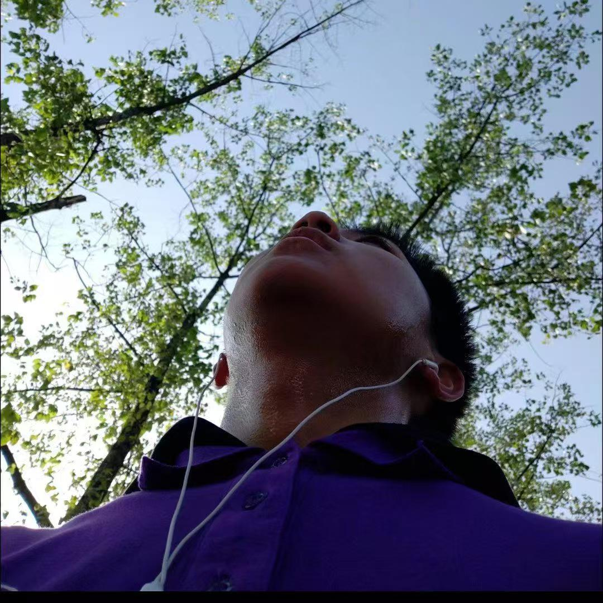

Hi👋! Great to see you here!
I'm a innovator, explorer and builder. I am not content to learn and just imitate the knowledge and skills that
already exist,
but crazy about creating something new, which echoes what Greek philosopher Socrates said 2500 years ago,
“Education
is a kindling of a flame, not a filling of a vessel”. I love that what I do really changes the world, and
creating is a way
for me to interact with this world and find myself.